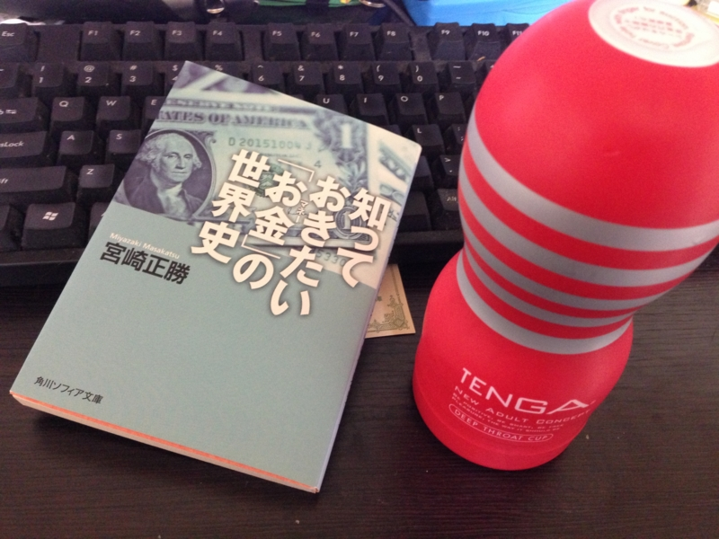
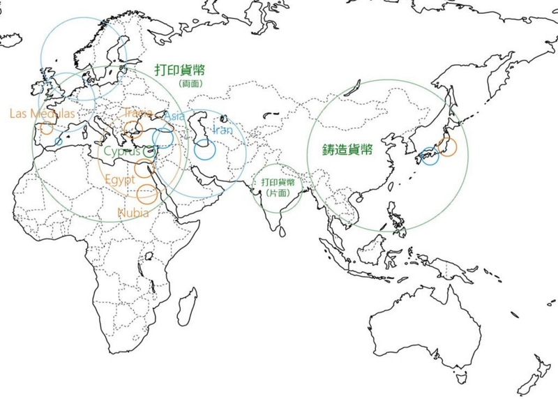
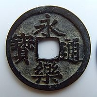

『知っておきたい「お金」の世界史』（と何か）
公開日：

http://www.amazon.co.jp/registry/wishlist/17CIQBD4FKZQW に登録していたら、とある紳士*1が送ってくれた。ほんとにありがとう！ なぜか余計なものもついていたのだけど……。これ、どうせいと！？
内容は、高校生向けの教養書って感じ。でも、ところどころ知らないこともあって、結構面白かった。二次試験に世界史のある大学（とくに記述問題）の受験生なんかは、こういうのを読んでおくと歴史が暗記物にならなくて楽しくなると思うよ。よく地理（空間）と歴史（時間）をバラバラに、暗記だけで乗り切ろうとする人がいるけれど、あれは労力の無駄だし、のちのちの役にも立たない。モノゴトの関連性を掴んでしまえば、それはたいていほかのことにも応用が可能で、そういった応用と類推が効くならば、何もシャカリキになってすべてを丸暗記する必要はないんだ。

- 銅（または青銅、銅と錫の合金）はだいたいどこでもとれるし、加工も簡単。歴史的にも、最初に活用されたのは銅だった。ちなみに、銅（Copper、羅：cuprum）は「cyprium aes（キプロス島の真鍮）に由来し、キプロスにフェニキアの銅採掘場があったことに由来する」のだそうだ（銅 - Wikipedia）。
- 銀といえばメソポタミア。イラン高原や小アジアで産し、ハンムラビ法典には銀による利子の徴収についてすでに規定がある。単位は銀の従量単位シュケル。中央アジアのソグド地方も銀の産地で、イスラム商業帝国を潤した。
- 金といえばエジプト。ナイル川の砂金とヌビア地方（古代エジプト語で金を表す Nub が語源）の金で、古代では極めて産出量が大きかった。
基本的に、初期の貨幣は素材価値をベースにしている。オリエントは金銀が比較的豊富で、金と銀（および銅）の交換比率を定めた金銀複本位制が古くからおこなわれていた。しかし、金銀といった貨幣資源に乏しい中国では、早くから権威に基づく鍛造の名目的貨幣が作られている。これは現代の貨幣により近く、先進的な制度と言えるが、“信用貨幣”への発達が遅れたため、近代では西洋に後れをとった。一方、インドにはペルシア経由で鍛造貨幣（銀）が伝わったが、鋳造の銅貨幣も作られている。日本は比較的金銀が豊富であったにもかかわらず、古代では中国由来の銅銭が用いられていた*2。
| 東洋の貨幣 | 西洋の貨幣 | |
|---|---|---|
|  |  |
|
| 形状 | 円形方孔 | 円形無孔 |
| 刻印 | 貨幣名（漢字4文字） | 権力者の肖像 |
| 材質 | 銅銭のみ（＋手形） | 金貨・銀貨・銅貨 |
| 製法 | 鋳造（目方は不均一） | 鍛造（目方が均一） |
| 性質 | 権威による保証に基づく名目的貨幣 | 材料それ自体の価値に基づく素材貨幣 |
| 私鋳の横行 | 計算貨幣（ミナ、タレント） |
（貨幣の古今東西 - だるろぐ より）
ヘロドトスによると初めてのコイン貨幣はリディア（リュディア - Wikipedia、今のトルコ）で作られた。首都サルディス近郊のパクトロス川では、砂金と銀が2対1で混ざり合う自然合金“エレクトラム”に恵まれており、最初それをそのまま貨幣として利用していたが、やがて目方を均一にするためコインにしたという。リディアの国民は根っからの商業民で、「若い女性は皆売春をし、それによって結婚の持参金を手に入れる。彼らはこの金を自分の身柄とともに、自分で適当と思うようにあとで処分する」（『歴史』）のだそうだ。
古代の巨大帝国は、いずれも（中国を除き）金銀を抑えていた。エジプト、メソポタミア、ギリシア（トラキアの金）、ローマ（ラス・メドゥスをはじめとする金山・銀山）、イスラム（サハラ以南のアフリカとシルクロード）、ビザンツ（金）とフランク（銀）など。商業が盛んになると、貨幣需要が増す。そのため、それを支える貨幣素材が必要不可欠だった。古い経済学では“貨幣の不足”が頻繁に問題とされて、紙幣や電子貨幣が流通した現代からみるとあんまりピンとこないのだけれど、当時は喫緊の課題だったんだね。ブリオリズムを笑い飛ばすだけでは、大事なことを見落としかねない。
しかし、いつかは金銀も尽き、貨幣の素材たる金銀が不足、最終的には流通が遅滞する。これを解消する方法は古来から二つしか方法がない。
ひとつは、改鋳による通貨の切り下げ。ローマ帝国末期では銀貨の質が著しく悪化し、ほとんど青銅貨といってもよいシロモノに成り下がっていた。案外、このことはローマ帝国の衰亡にも関連しているのかもしれない。
もうひとつは、手形の発行。中国は早くから銅資源（もっといえば森林資源）すら枯渇し、宋・元代には世界初の紙幣「交子」「交鈔」が発行された。元では交鈔を流通させ、銀を税として国民から巻き上げて（包銀制、のちに交鈔での支払いが可能になる）た。これが、これと専売の塩という二本柱をイスラム世界へ流すことで、元は富を築く。しかし、最後にはインフレに陥ってしまう。
こうやって、経済の発展と崩壊の輪廻に終止符を打ち、中世からの目覚めるきっかけを作ったのが、西欧で発明された“信用貨幣”制度だった。
これについては長くなるので、今日は割愛するけれど、ようは少ない金銀で多くの「マネー」を供給する仕組みだ（貨幣乗数）。簿記、保険によるリスクマネジメント、金匠と銀行、投資制度と紙幣・金融商品などが組み合わさり、近代的な金融制度が次第に整備される（『ジョン・ローの虚像と実像―18世紀経済思想の再検討』 - だるろぐ）。貨幣はしだいに金を離れ、また歴史のあやもあり、すべてのマネーは基軸通貨（ポンド→）ドルに結び付けられていく。「価値があると思われているから価値がある」という存在に近づいていく。
本書の唯一残念なところは、最後の現代の金融貨幣についての一面的な記述だ。バブルと“貪欲”にフォーカスが当たっているが、なにもかもを“貪欲”で片づけてしまっては得るものが何もない。
バブルの本質は、「美人投票」と「その場にとどまるためには、全力で走り続けなければならない（It takes all the running you can do, to keep in the same place.）」にある。すべてを把握するためには複雑すぎる相互依存関係と、たった数‰以下の運用収益の差で資金が引き揚げられて破産するシビアなつながりが、ほんのちょっとの“貪欲”を雪だるま式に膨れ上がらせて、途方もなく大きなリスクを生んでしまう。みんなが霞を食って生きているならまだしも、これを完全に抑えることは不可能であり、金融に関わる人を“貪欲”とみるのは少し無理がある。
問題は個人の欲望ではなく、それにブレーキをかけることのできないシステムにあると僕などは思うのだけど、なかなかスマートな解決策などはないみたいでだいぶ口惜しい。
")
- 作者: 宮崎正勝
- 出版社/メーカー: 角川学芸出版
- 発売日: 2009/04/25
- メディア: 文庫
- 購入: 1人 クリック: 1回
- この商品を含むブログ (4件) を見る